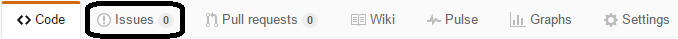
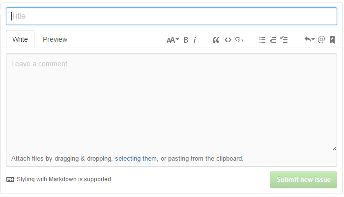

Pour permettre un suivi des erreurs l'utilisation des issues via Github est favorisé pour déclarer des problèmes ou bugs rencontrés.
Vous retrouverez ici les liens pour les différent dépôts git.
Sélectionner ensuite la section :

Ensuite cliquer sur :
Il ne vous reste plus qu'a saisir votre issue :

Et effectuer le "Submit new issue".
Pannes et problèmes rencontrés
Créé avec HelpNDoc Personal Edition: Créer des documents d'aide HTML facilement